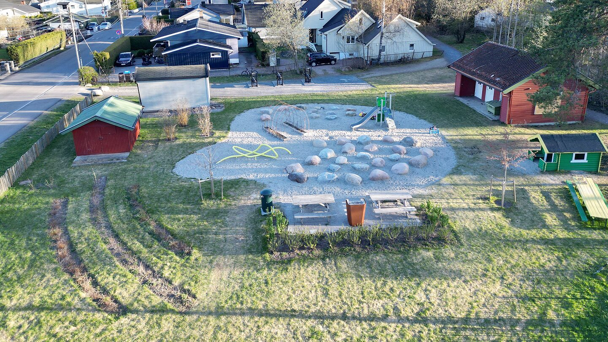
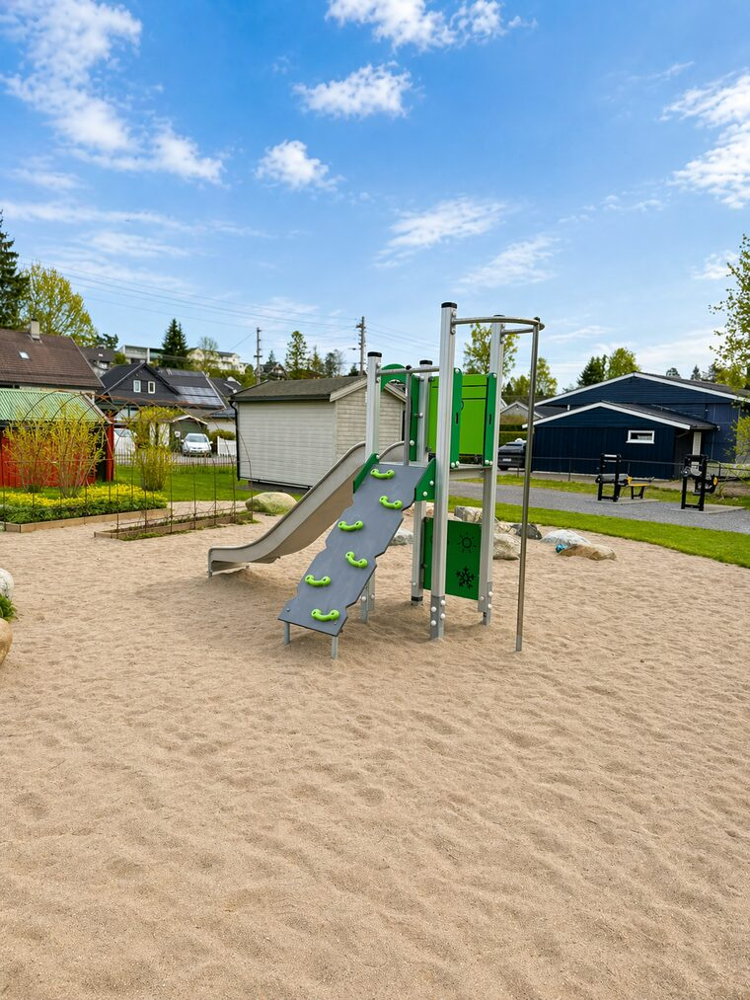
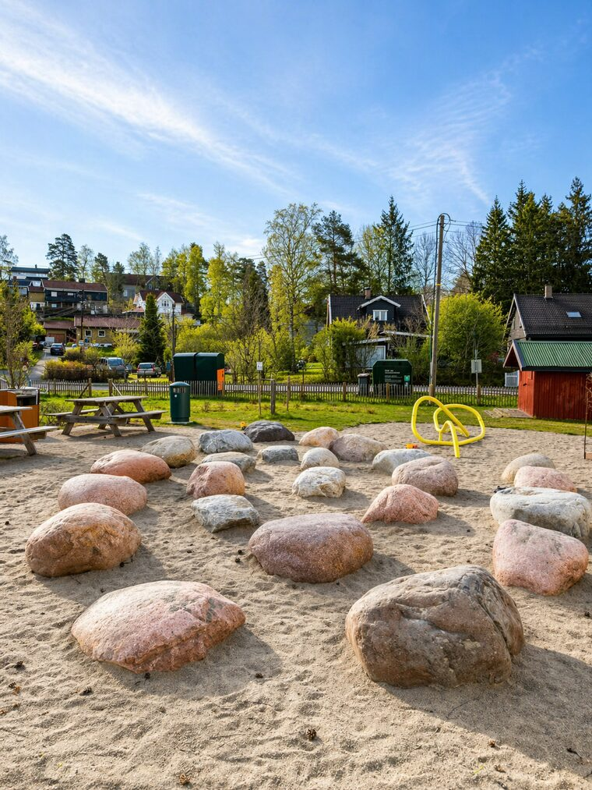
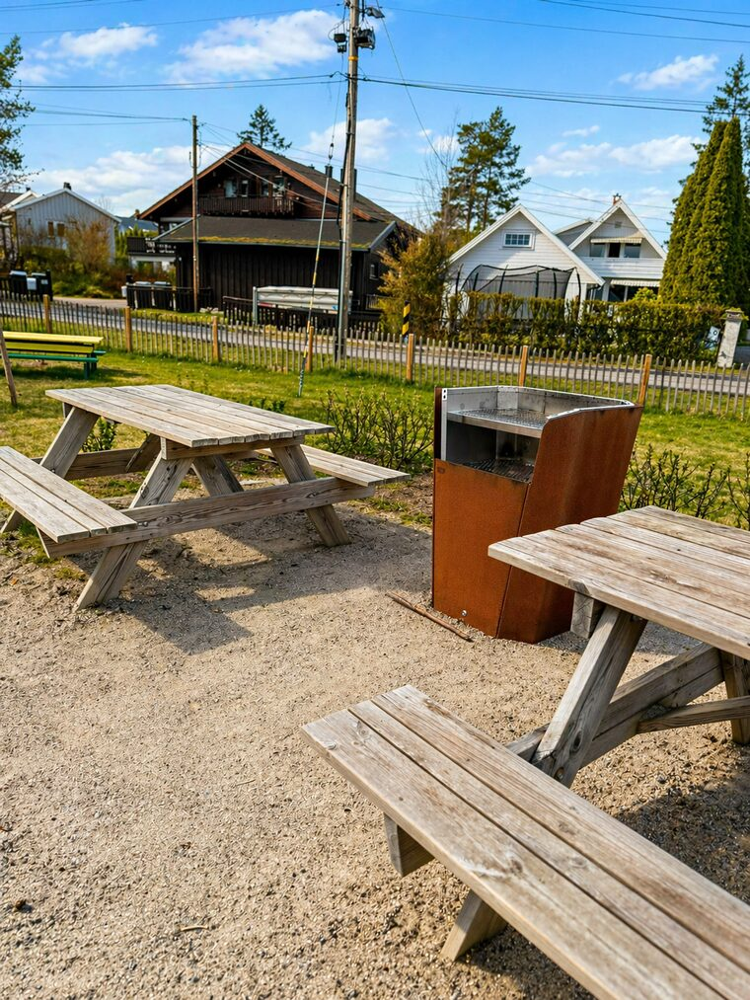
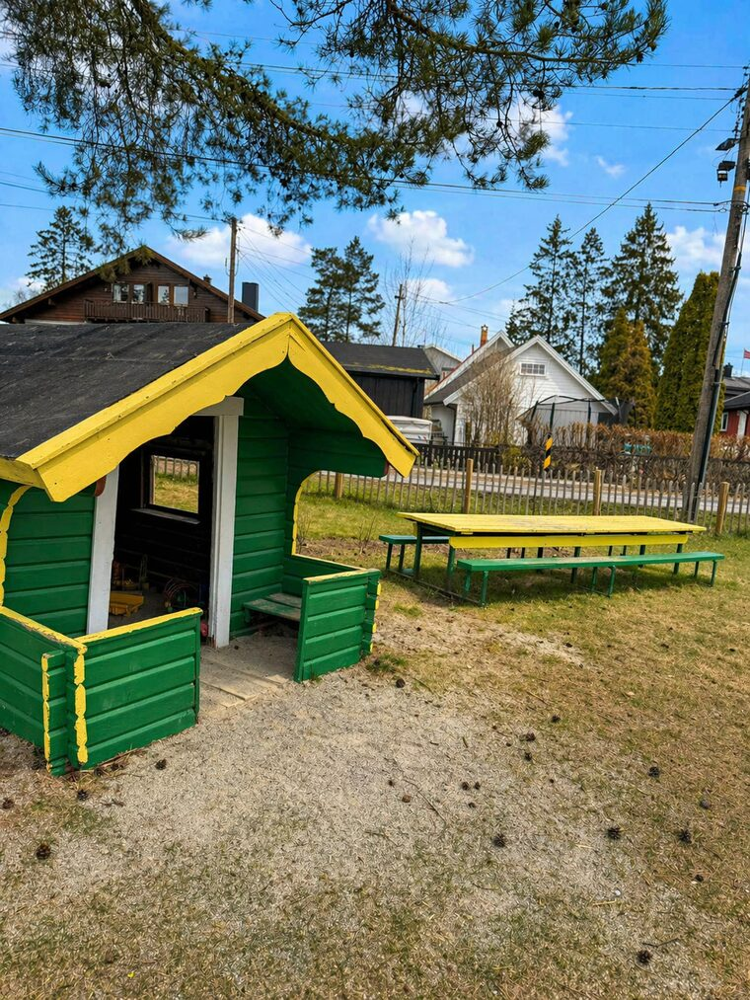

Parken
Lek, opphold og nabolag
Bikuben er nevnt i KlimaOslo sin artikkel om nye og oppgraderte lekeplasser i Oslo. Artikkelen viser parken som en del av arbeidet med flere grønne steder for lek og opphold i byen.
Bikuben Barnepark er en nærmiljøpark i Høybråtenveien 69. Foreningen jobber for at parken skal være tilgjengelig for folk i området, i samarbeid med Oslo kommune.
Adresse
Høybråtenveien 69, 1086 Oslo
Kart
Parken ligger på Høybråten i bydel Stovner, med inngang fra Høybråtenveien.

Parken
Bikuben er nevnt i KlimaOslo sin artikkel om nye og oppgraderte lekeplasser i Oslo. Artikkelen viser parken som en del av arbeidet med flere grønne steder for lek og opphold i byen.
I parken
Parken har blant annet steinlabyrint, plantetunell, buskfelt, trær, bærbusker, benker og fellesgrill.
Foreningen
Foreningen arbeider for sosialt samvær og aktivitet i Bikuben Barnepark. Målet er at parken skal være et trygt, grønt og tilgjengelig sted for nærmiljøet.
Historie
Navnet Bikuben har en lokal historie på Høybråten. Oslo Byleksikon skriver at veien fikk navn etter en lekeplass som ble gitt til Høybråtens befolkning, og at bikuben viser til symbolet til Oslo Arbeidersamfunn.
Bilder



